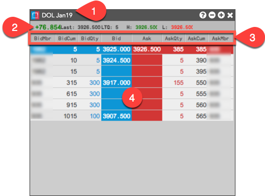

The Depth widget contains the following:

- Instrument Name — Shows the name of the instrument displayed in the Depth widget.
- Market Data — The following market data is displayed for the current trading session:
- Net change: A positive net change in price is highlighted green, a negative net change (e.g., -0.49) is highlighted red.
- Last: Last traded price.
- LTQ: Last traded quantity.
- H: High price for the current session.
- L: Low price for the current session.
- Market Data columns — The following columns are available:
- BidMbr: Displays the code or name of the counterparty submitting the Buy order. Note: Shown only for exchanges that provide this data and when detailed depth is shown.
- BidCum: Shows the cumulative Bid quantity at each level of detailed or aggregate depth. For detailed depth, each order quantity at a price level is added to the next level of depth away from the inside market and shown in this column. For aggregate depth, the total Bid quantity is shown at each price level.
- BidQty: Shows total Bid quantity at each level of depth.
- Bid: Shows the best Bid price at each level of depth.
- Ask: Shows the best Ask price at each level of depth.
- AskQty: Shows total Ask quantity at each level of depth.
- AskCum: Shows the cumulative Ask quantity at each level of detailed or aggregate depth. For detailed depth, each order quantity at a price level is added to the next level of depth away from the inside market and shown in this column. For aggregate depth, the total Ask quantity is shown at each price level.
- AskMbr: Displays the code or name of the counterparty submitting the Sell order. Note: Shown only for exchanges that provide this data and when detailed depth is shown.
- Detailed/Aggregate Depth — Displays detailed depth and all levels of aggregate depth provided by the exchange. Each different price level is shaded in the widget. To show aggregate depth, select the Hide detailed depth right-click context menu setting.